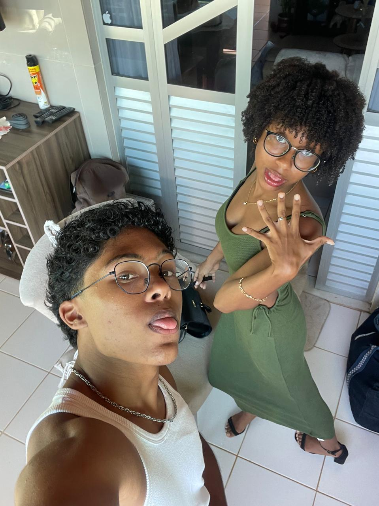
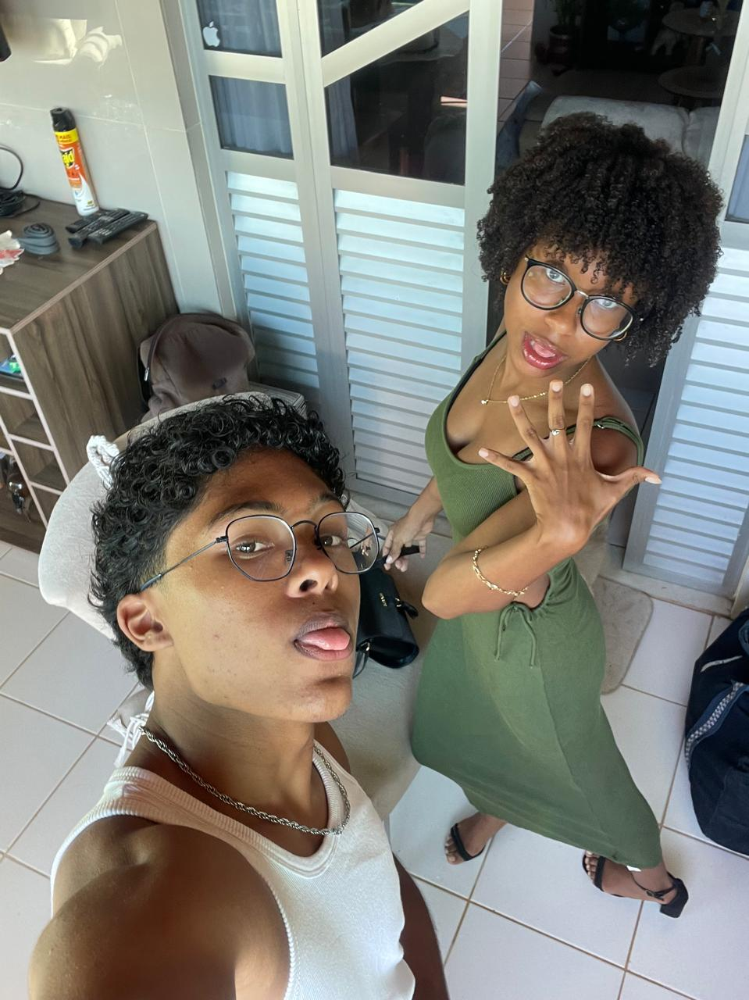
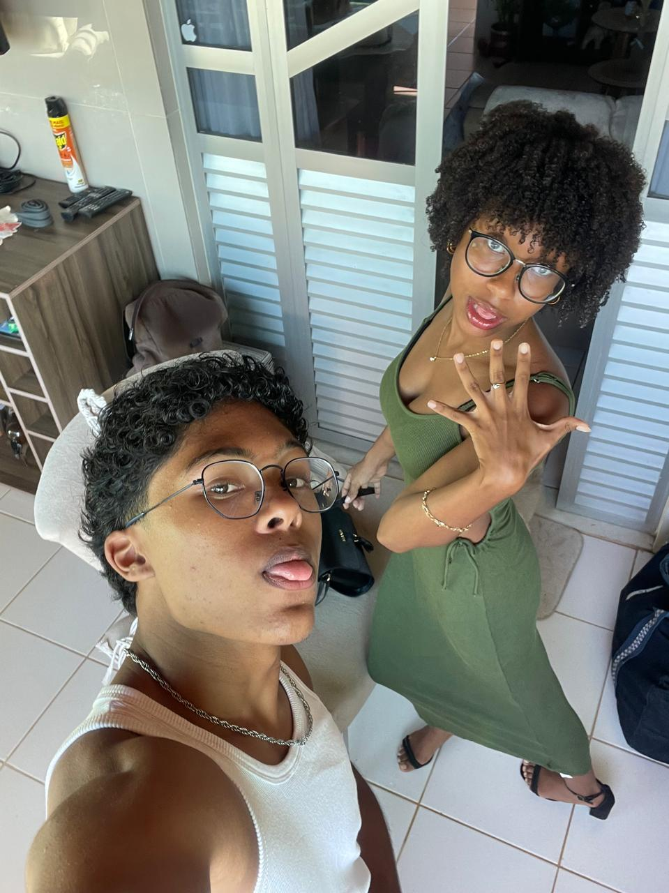

Me apaixono todos os dias por voce,
Te amando cada vez mais.
Em cada ano, mes, dias, minutos, segundos.


Seu sorriso… Ah, o seu sorriso. Ele foi, sem dúvida, a primeira coisa que roubou minha atenção e ganhou meu coração. É tão lindo, tão sincero, que me desarma por completo. Seu sorriso tem o poder de acalmar meu mundo, de me fazer esquecer dos problemas.

Seu abraço… é simplesmente o meu lugar favorito no mundo. É nele que eu encontro a paz que nenhuma palavra consegue descrever. Quando você me abraça, todo o resto some. É como se, por alguns segundos, só existisse você, eu… e o mundo lá fora parasse. Ali, no seu abraço, eu me sinto seguro, protegido, amado.

O que dizer dos seus olhos? Amo eles… de um jeito que nem sei explicar. São, sem dúvida, os olhos mais lindos que eu já vi no mundo. Quando eu olho pra eles e vejo aquele brilho único, meu coração simplesmente dispara.

Quando seus lábios tocam os meus, tudo para. O tempo desacelera, o mundo desaparece, e só existe a gente… nesse instante que parece infinito. Seu beijo tem gosto de cuidado, de carinho, de amor. É doce, é intenso, é aconchegante… é viciante.

O que me encanta em você não é só o que vejo, mas principalmente o que sinto vindo do seu coração. Ele é lindo, puro, gigante… cheio de amor, cuidado e bondade. Seu coração é daqueles raros, que transborda carinho em cada gesto, que se preocupa, que cuida, que acolhe.

Ver o quanto você se entrega para Deus é, simplesmente, uma das coisas mais lindas que já presenciei. Eu admiro demais sua fé, sua entrega, seu amor por Deus. Quando te vejo ali, no altar, com o coração rendido, tão entregue, tão verdadeiro… meus olhos até brilham. É como se, naquele momento, o céu se abrisse e a presença de Deus tomasse conta de tudo. Seu amor por Ele transborda, toca quem está perto e inspira quem te observa..

Você simplesmente é a mulher mais esforçada, determinada e guerreira que eu já conheci. O quanto você se dedica, corre atrás dos seus sonhos e se esforça todos os dias me inspira de um jeito que você nem imagina. Ver sua força, sua disciplina e sua vontade de conquistar tudo aquilo que você sonha me enche de orgulho. Eu não tenho dúvida nenhuma de que você vai ser a melhor pedagoga que já existiu, porque tudo que você faz, você faz com amor, com entrega e com um coração gigante..

O seu cheiro… ah, o seu cheiro. É algo que eu simplesmente não consigo explicar, não tem comparação, não tem definição. É um cheiro que acalma, que me traz paz, que me faz sentir em casa, no meu lugar. Só de te abraçar e sentir seu perfume, eu fico todo bobo, completamente encantado. Por mim, eu passaria o dia inteiro com o rosto no seu pescoço, só te abraçando, te cheirando e aproveitando cada segundo desse aconchego que só você me proporciona..

Sua voz… é simplesmente incrível. Eu poderia passar horas, dias, uma vida inteira te ouvindo sem nunca me cansar. Ela tem um jeito de me acalmar, me envolver, me fazer sorrir e me trazer paz, tudo ao mesmo tempo. E quando você louva ao Senhor… ah, é algo surreal, algo que não dá pra explicar, só sentir. É como se, naquele momento, sua voz se tornasse um canal direto com o céu.

SIMPLISMENTE VOÇÊ